1. Using Git with a local project
Each step can be done with GitHub Desktop or with git on the command line. When the instructions differ, use the tabs to switch between the two. To use GitHub Desktop, you will need to install and setup GitHub Desktop. Follow the instructions here.
How does Git work?
Essentially, Git works around two concepts: repositories and commits.
A Git repository is a folder on our computer that we have told the application git to keep track of. Any folder can be made into a Git repository!
A Git repository records changes since it started tracking this folder. Changes are organised as commits. For instance, the Git history of a folder could look like this:
%%{init: {"gitGraph": {"rotateCommitLabel": false, "showBranches": false}}}%%
gitGraph
commit id: "start using\n git"
commit id: "add a plot to \n view time bins"
commit id: "fix a typo in \nthe documentation"
Our first commit (“start using git”) records the state of the folder when we started using Git, our second one could for instance add a script to generate a plot, and our third one fixes a typo.
Commits are the cornerstone of version control because they allow us to go back to any point, i.e. to recover any version of our project.
In this exercise, we will initialise a Git repository on our computer and explore various Git commands with it. In the second exercise, we will see how to store a Git repository online and how to interact with it. Finally, in the third exercise, we will see how to collaborate on other people’s repositories.
I. Initialising and adding files
In this section, we will initialise a Git repository from scratch and start tracking some files.
Create a new repository called
test-git-repo:If it’s not already open, open GitHub Desktop.
If this is your first time using GitHub Desktop you should see a screen with “Let’s get started!” at the top:
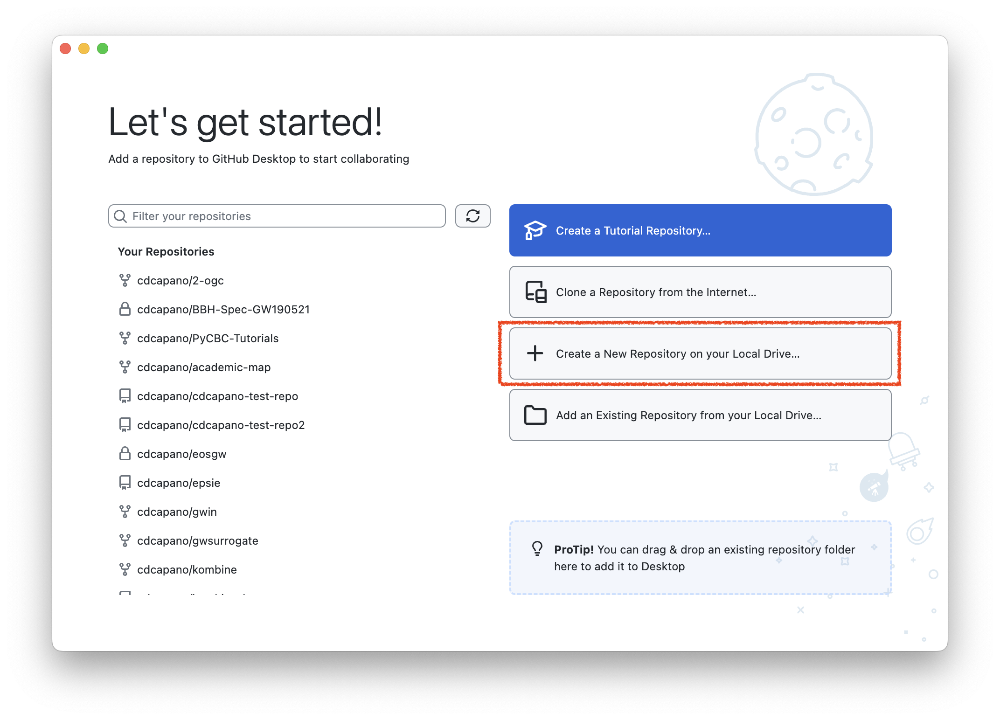
Click the button titled “Create a New Repository on your Local Drive…”
In the Create a New Repository window, enter
test-git-repoin the “Name” field, then click “Create Repository”. You do not need to fill out any of the other fields.NoteBy default this will create a local repository in your Documents/GitHub folder. You can change where the repo is located by clicking “Choose”. For this tutorial, let’s stick with the default.
You will see a window that has “No local changes” at the top:
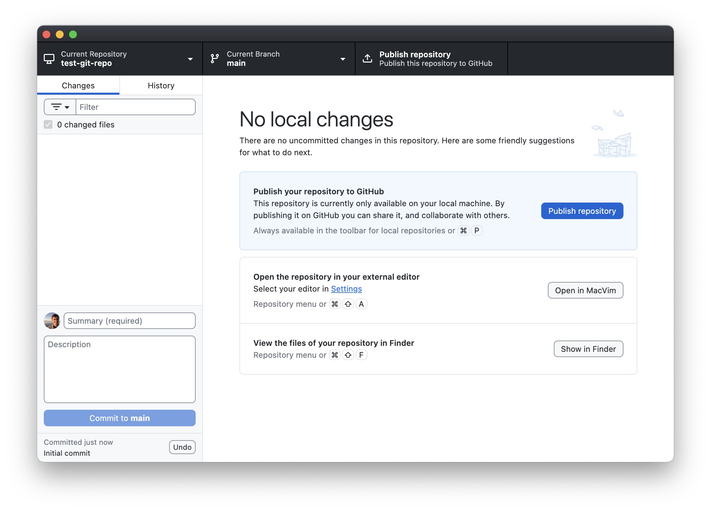
In the upper left you will see “Current repository” with “test-git-repo” underneath it, indicating that you are currently looking at your test-git-repo. This is how you will interact with your new repository! You can see the repository folder by clicking on the button labelled “Show in Explorer” (on Windows) / “Show in Finder” (on a Mac).
Create a folder called
test-git-repo(here, in your home directory), move into it, and initialise a Git repository in it:cd mkdir test-git-repo cd test-git-repo git initgit initconfirms that the repository was created:Initialized empty Git repository in /home/you/test-git-repo/.git/git statusshows:On branch main No commits yet nothing to commit (create/copy files and use "git add" to track)Note that your repository is a folder on your computer, just like any others. At the moment, there are no files in your repository, although there is a hidden folder called
.git(and, with GitHub Desktop, a hidden file called.gitattributes). You never touch these files; they are whatgituse to keep track of the contents of this folder. These are what make this folder a repository.Let’s add some files to your new repository for Git to track. In the following steps, we’ll pretend that we’re a writer working on a script for a new movie. We’re going to use a simple text editor to create a file called
story.txt.TipHow to create a text file?To do that:
- If you’re on Windows:
- Open Notepad. This will open a new untitled file.
- Click File -> Save As…
- Navigate to your repository’s directory. If you kept the default path when creating the repository, this should be
PC > Documents > GitHub > test-git-repo. If you’re not certain, you can verify by clicking on the “Show in Explorer” button in GitHub Desktop. - In the “File name” field enter
story.txtthen click “Save”.
- If you’re on MacOS:
- Open TextEdit and click “New Document”. This will open a new untitled file.
- Select Format -> “Make Plain Text”. (We need to do this to get the desired file extension.)
- Click File -> Save…
- In the “Save As” field type
story.txt. - In the “Where” field navigate to your repository’s directory. If you kept the default path when creating the repository, this should be
Documents/GitHub/test-git-repo. If you’re not certain, you can verify by clicking on the “Show in Finder” button in GitHub Desktop. - Click “Save”.
- If you’re on Windows:
Now let’s write our story! Use your text editor to add following to
story.txt:Once upon a time, in a land far, far away...WarningType the lines in exactly as they appear above: add a new line after the first “far,”. For reasons that will become clear below, it’s important that the “far away…” is on a separate line.
Save your changes by clicking File -> Save, or by using the keyboard shortcut Ctrl+S (on Windows) / ⌘+S (on Mac).
Let’s see what Git thinks of this new file:
Go back to GitHub Desktop. You’ll notice that it has changed from “No local changes” to showing a “Changes” tab with
story.txtlisted with its contents: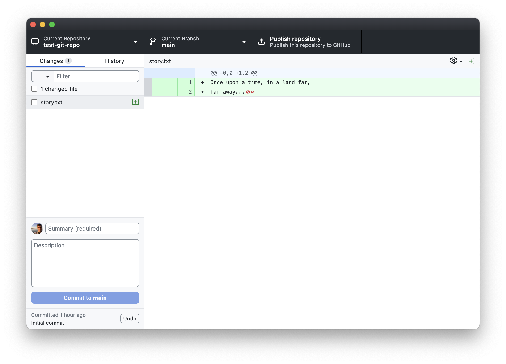
git statusOn branch main No commits yet Untracked files: (use "git add <file>..." to include in what will be committed) story.txt nothing added to commit but untracked files present (use "git add" to track)gitknows you have a file in the directory calledstory.txt, but it isn’t tracking it yet!Let’s tell
gitto start trackingstory.txtby making a commit. Each commit has a commit message: this is text that will be added to the commit describing what was done. Here, we’ll use “Create story.txt”.If it isn’t already, click the box next to “1 changed file”. When you do, you’ll notice that the “Summary (required)” box automatically changes to “Create story.txt”:
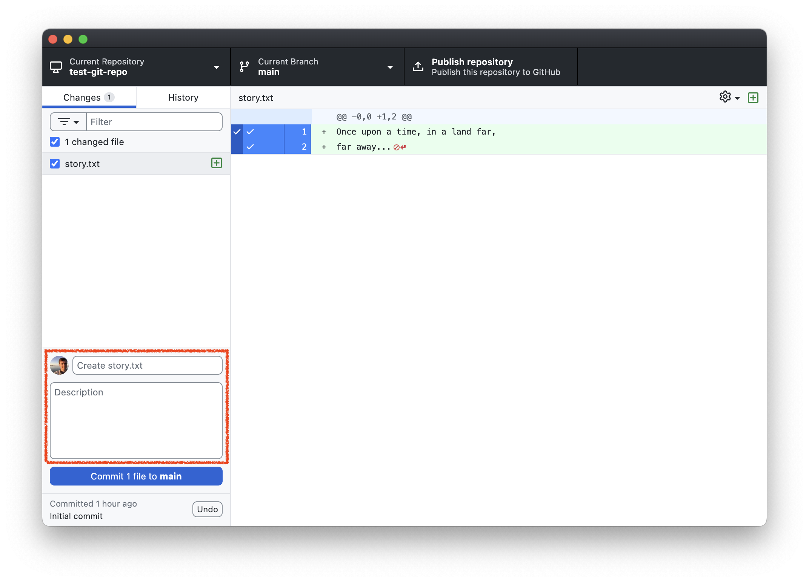
The summary box and the optional “Description” box below constitute the commit message. In this case, GitHub Desktop automatically provides a default message of “Create story.txt”. That’s a good description of what we’ve done, so let’s keep it.
Now click the “Commit 1 file to main” button. When you do, the window will automatically change back to “No local changes”.
First, stage
story.txt, i.e. add it to the next commit, then commit it:git add story.txt git commit -m "Create story.txt"git commitprints a summary of the commit.17b2095is the start of its hash, which identifies it (yours will be different):[main (root-commit) 17b2095] Create story.txt 1 file changed, 2 insertions(+) create mode 100644 story.txtIt also tells us how many files changed and how many lines were added or removed (here, we only added lines).
git statusnow says:On branch main nothing to commit, working tree cleanCongratulations, you’ve made your first Git commit!
TipWhat happens when you commit changes?A commit creates a snapshot of the files you committed. Every commit has a commit message, an author, and a unique hash identifying that change. Git keeps a history of all commits made in a repository.
You can view the history of your commits:
Click on the “History” tab:
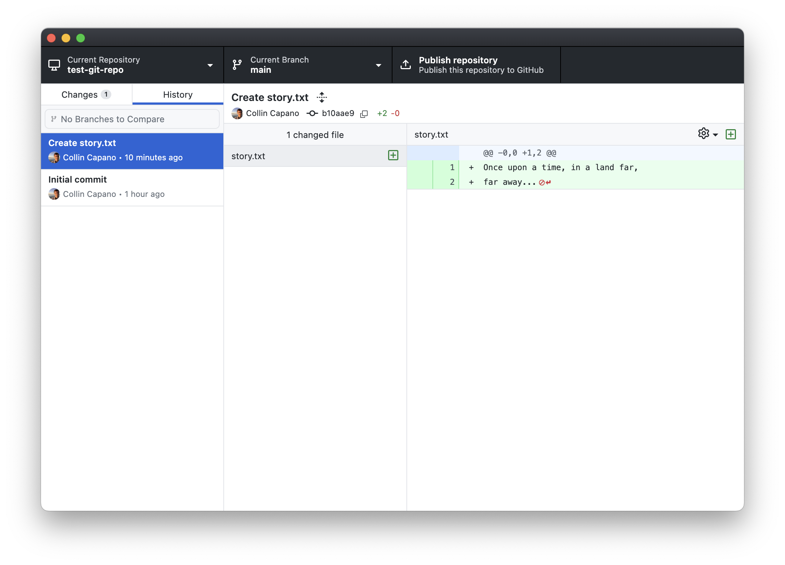
In this case, there are two commits: an initial commit that was created by GitHub Desktop when the repository was created, and the commit you just made to create
story.txt.git logcommit 17b2095e7b6ed25600be638ed5f02749ddb94a3d (HEAD -> main) Author: Your Name <you@example.com> Date: Tue Oct 6 10:03:00 2026 +0200 Create story.txtUnlike GitHub Desktop,
git initdoesn’t create an “Initial commit”, so there is only the commit you just made.
%%{init: {"gitGraph": {"rotateCommitLabel": false, "showBranches": false}}}%%
gitGraph
commit id: "Initial commit"
commit id: "Create story.txt"
We created a file, which is a type of change that can be tracked by Git. However, its real strength is to track changes within files so that we can clearly see which parts have been created, deleted, or modified.
In the next section, we will modify some of our existing files and see how to record these changes.
II. Making changes to files
You’re not happy with your story opening. You don’t want to write fairy tales, you want to write Sci-fi!
Go back to your text editor
story.txtand change the lineOnce upon a time, in a land far,toA long time ago in a galaxy far,so that your file now reads:A long time ago in a galaxy far, far away...Much better. Save the changes to the file.
WarningSaving is not committing!Simply saving changes to a file will not result in a new snapshot of it! To tell Git to create a snapshot for preservation you have to create a commit. If you make further changes to your file without committing in between, the intermediate changes will not be tracked.
Let’s see what lines have changed in
story.txtsince the last commit. This is called a diff:Go back to GitHub Desktop. Notice that a yellow box with a dot has appeared next to
story.txt. If you click on story, you should now see the diff: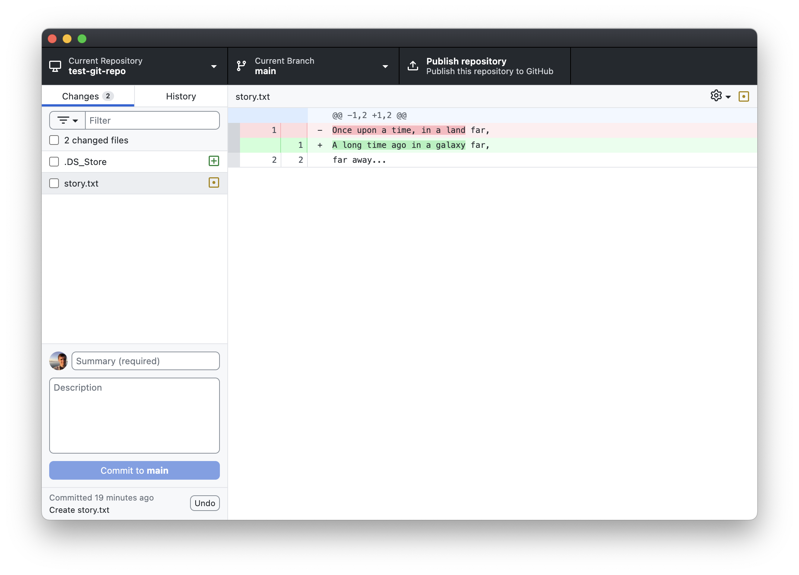
WarningThose pesky .DS_Store files on MacOSAt some point Mac users will notice a file called
.DS_Storeappears in their repo, as it did for me in the screen shot above. This is a hidden file that MacOS automatically creates in every folder for indexing purposes. Do not commit this file to your repository! It’s not something you want to track. For now, just ignore it. Below we provide instructions on how to permanently ignore files like these in your repository.Windows users: carry on.
git diffdiff --git a/story.txt b/story.txt index ceb7be2..577687e 100644 --- a/story.txt +++ b/story.txt @@ -1,2 +1,2 @@ -Once upon a time, in a land far, +A long time ago in a galaxy far, far away...There is a lot of info here, but the important part is:
-Once upon a time, in a land far, +A long time ago in a galaxy far,which tells us which line was removed (starting with
-) and which line was added (starting with+).Git recognizes that
story.txthas changed, but your changes have not been committed yet.This is what the yellow box next to
story.txtmeans. If you go to the History tab, you’ll see that there are still only two commits. If you click on the “Create story.txt” commit, it will show the previous state of the file.git statustells us that a file has been modified but is not ready to be committed yet:On branch main Changes not staged for commit: (use "git add <file>..." to update what will be committed) (use "git restore <file>..." to discard changes in working directory) modified: story.txt no changes added to commit (use "git add" and/or "git commit -a")Let’s commit your changes so you don’t lose them! This time, let’s give a more descriptive commit message: “Change opening”.
Click the check box next to
story.txt. When you do, GitHub Desktop will automatically change the summary to “Update story.txt”. That is a description of what we did, but it’s not very informative. Change the summary to “Change opening”, then click “Commit 1 file to main”: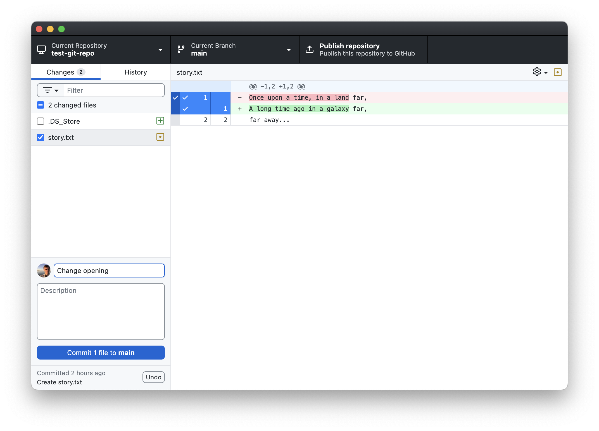
You’ll now see 3 commits in your history.
git add story.txt git commitWithout
-m,git commitopens a text editor to write the commit message, which is handy for multi-line messages. Type “Change opening”, then save and exit to complete the commit:[main b81e803] Change opening 1 file changed, 1 insertion(+), 1 deletion(-)git lognow shows 2 commits.git log --onelineshows a more compact version of the history, with one line per commit:b81e803 Change opening 17b2095 Create story.txt
%%{init: {"gitGraph": {"rotateCommitLabel": false, "showBranches": false}}}%%
gitGraph
commit id: "Initial commit"
commit id: "Create story.txt"
commit id: "Change opening"
Ignoring changes in some files
It frequently happens that you can have files in your repository that you don’t want Git to track. This can be things like temporary build files, or system files like the .DS_Store on Macs. If you don’t explicitly commit a new file (by clicking the check mark next to it and hitting the commit button), then files won’t be tracked. However, trying to avoid clicking these files can be tedious and error prone. You’ll also get warnings about changes every time you switch branches (below).
We can tell Git to ignore certain files by storing their names in a special file called .gitignore. Here, we’ll tell it to ignore the .DS_Store file created by MacOS.
Windows users will not have a .DS_Store file or any other hidden file created by the OS as on Mac. To follow along in this part, create an empty file in your repository called .DS_Store:
Switch back to Notepad.
Create a new file by typing Ctrl+N. This will open a new Untitled file that is empty.
Click File -> Save.
In the “Save as type” field click the drop-down menu and select “All files”.
In the File name field type
.DS_Store.. Note the trailing period! That is, enter.DS_Store.not.DS_Store– if you don’t include the period at the end of the file name, Windows will automatically add.txtto the end.Click “Save”
touch .DS_StoreTo tell Git to ignore a file:
Add the file you’d like it to ignore, in this case
.DS_Store, to.gitignore:Right-click
.DS_Store. On the drop-down menu, select “Ignore file (Add to .gitignore)”: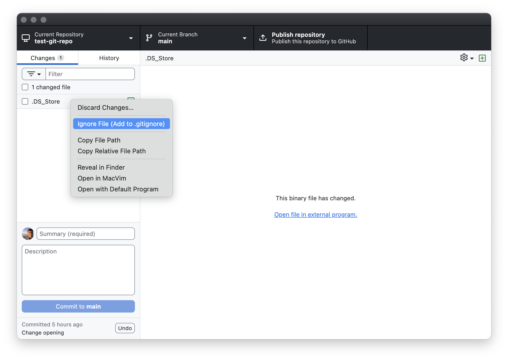
echo ".DS_Store" >> .gitignoreThis creates
.gitignoreif it doesn’t exist..DS_Storeno longer appears in the changes. In its place, you’ll see a.gitignorefile has been created. The.gitignorefile is a simple text file that lists the names of any files in the repository that you want Git to ignore.Notice that GitHub Desktop has both created the file, and added
.DS_Storeto it: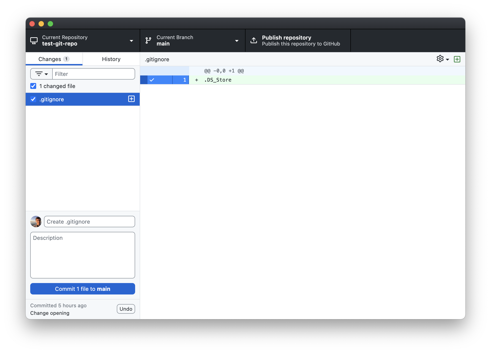
Check this with
git status:On branch main Untracked files: (use "git add <file>..." to include in what will be committed) .gitignore nothing added to commit but untracked files present (use "git add" to track)As with any other file, we need to commit the changes to
.gitignorefor Git to keep track of it, here with the message “Create .gitignore”:Commit the change by clicking the “Commit 1 file to main” (note that the commit message automatically created by GitHub Desktop is “Create .gitignore”).
git add .gitignore git commit -m "Create .gitignore"[main 40d5b63] Create .gitignore 1 file changed, 1 insertion(+) create mode 100644 .gitignore
%%{init: {"gitGraph": {"rotateCommitLabel": false, "showBranches": false}}}%%
gitGraph
commit id: "Initial commit"
commit id: "Create story.txt"
commit id: "Change opening"
commit id: "Create .gitignore"
From now on, any file named .DS_Store in this repository (meaning, in this folder and all sub-folders) file will not appear in your Changes menu, nor will you be able to commit changes to it to the repository.
III. Branches
You want to start working on titles for your stories, but you have a feeling that imagining the perfect title will take several iterations.
We could continue to make new commits as we come up with new ideas, but this would quickly lead to a messy Git history. This is not always a big deal, but Git is here to enable us to quickly go back to previous versions, and it is easier to locate a correct version when we don’t have to navigate dozens of commits containing intermediate changes.
In other words, we would like to keep our work on titles separate from our work on the story itself, and only integrate the titles when we are finally happy with them.
This will require introducing a new key concept in the usual Git workflow: branches.
What is a branch?
A branch is a sort of parallel environment where we can push our commits. A Git project can have as many branches as you want.
The graphs we have been seeing so far were slightly misleading. In reality, we always commit to a branch (by default, we commit to the main branch):
%%{init: {"gitGraph": {"rotateCommitLabel": false}}}%%
gitGraph
commit id: "Initial commit"
commit id: "Create story.txt"
commit id: "Change opening"
commit id: "Create .gitignore"
Creating a new branch
When we create a new branch, we separate our future commits from the main branch. For instance, we could create a branch title-dev that will receive all our commits about the stories titles:
%%{init: {"gitGraph": {"rotateCommitLabel": false}}}%%
gitGraph
commit id: "Initial commit"
commit id: "Create story.txt"
commit id: "Change opening"
commit id: "Create .gitignore"
branch title-dev
commit id: "Create title.txt"
Let’s see how to do this in practice:
Let’s look at the branches of your repository:
Click on the “Current Branch” tab. This will show a drop-down menu showing all of the branches on your repository:
git branch* mainThe
*marks the branch you are on.Currently, we only have one branch, which is called
mainby default, as mentioned above. Think of it as the master copy of your repository. If this were a code repository, themainwould be the branch that you (try to) keep a clean, working version of your code.Let’s create our new branch, named
title-dev, on which we will develop our title, and switch to it:Click the “New Branch” button in the upper right. You will be prompted to create a name. Call it
title-dev, then click “Create Branch”: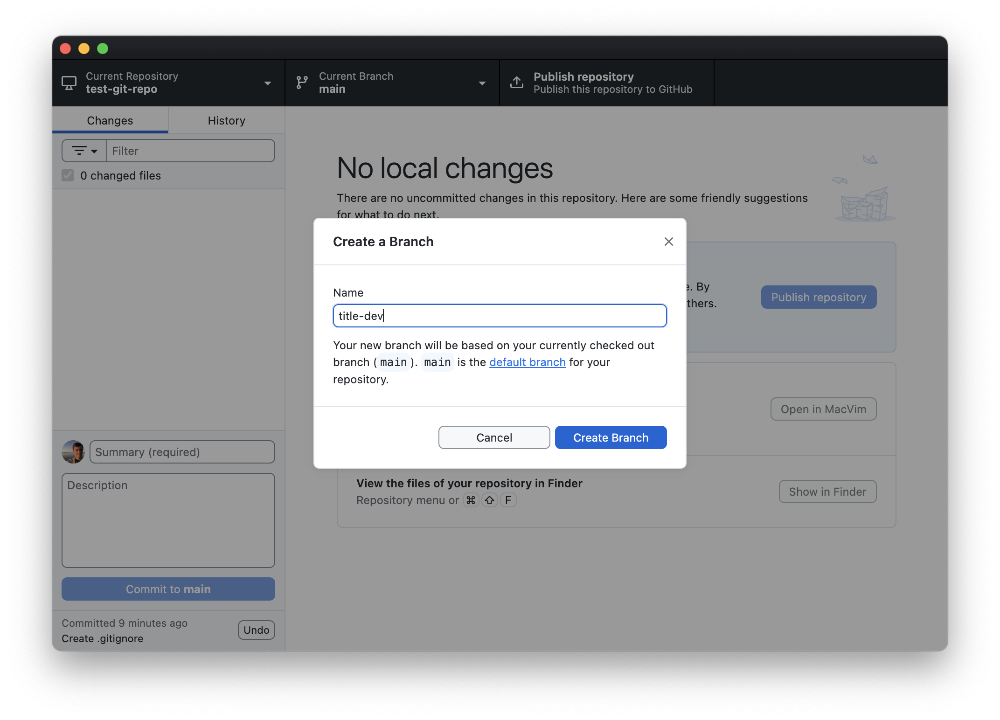
You are now on a new branch called
title-dev. You can see that by looking at the Current Branch at the top: it says title-dev: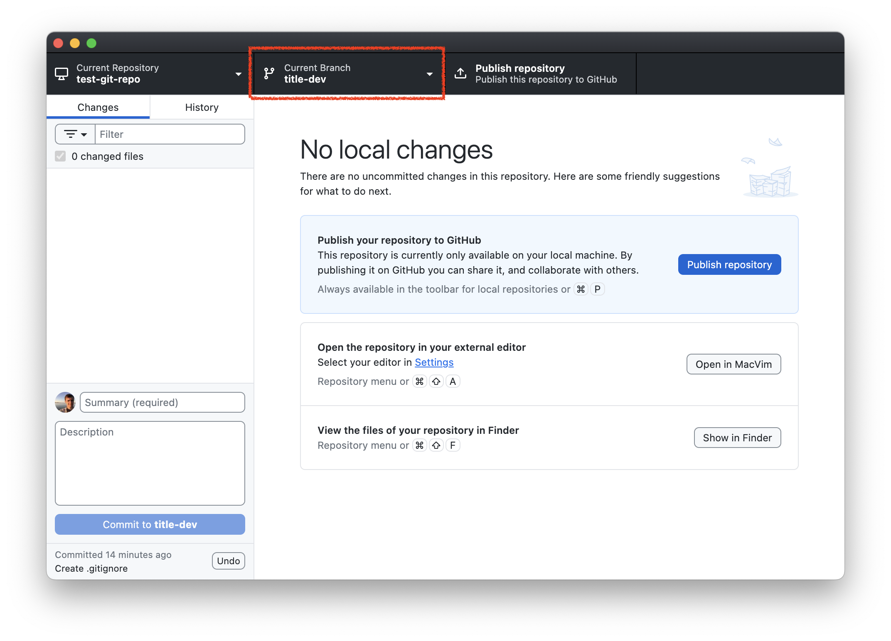
git checkoutallows us to navigate between existing branches. In this case, we use-bto create the branch first, and then navigate to it:git checkout -b title-devSwitched to a new branch 'title-dev'You are now on a new branch called
title-dev, as shown bygit branch:main * title-devLet’s do some development on
title-dev. Now let’s create a file calledtitle.txtto store our title idea.TipHow to create a new text file?- Windows users:
- Switch back to Notepad.
- Type Ctrl+N to create a new untitled file.
- Click File -> Save
- In the “File name” field enter
title.txtthen click “Save”.
- Mac users:
- Switch back to TextEdit.
- Type ⌘+N to create a new untitled file.
- Select Format -> “Make Plain Text”. (We need to do this to get the desired file extension.)
- Click File -> Save…
- In the “Save As” field type
title.txt. - Click “Save”.
- Windows users:
Add a title to
title.txt. Use your text editor to add:STAR FIGHT!Save the change by typing Ctrl+S (Windows) / ⌘+S (Mac).
Commit the new file with the message “Create title.txt”:
Go back to GitHub Desktop. You should see
title.txtin the Changes sidebar, with the new lines shown in the diff: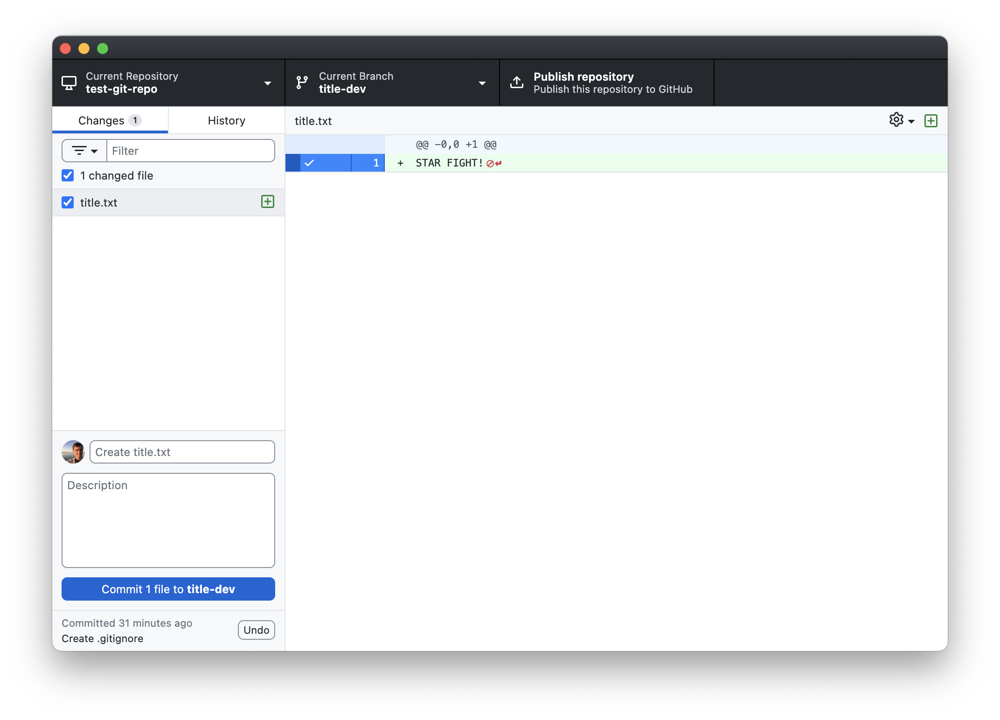
Commit the new changes by clicking “Commit 1 file to title-dev”. Note the default commit message is “Create title.txt”.
git add title.txt git commit -m "Create title.txt"[title-dev 0517538] Create title.txt 1 file changed, 1 insertion(+) create mode 100644 title.txtNote that the summary starts with
title-dev: this is the branch on which the commit was made.
%%{init: {"gitGraph": {"rotateCommitLabel": false}}}%%
gitGraph
commit id: "Initial commit"
commit id: "Create story.txt"
commit id: "Change opening"
commit id: "Create .gitignore"
branch title-dev
commit id: "Create title.txt"
Merging
We have done some work on the title in parallel to the work on the story itself, and we finally found a great title that we don’t plan to change. It is now time to integrate our changes on the title back into the main branch. In more common Git vocabulary, it is time to merge our branch.
First, we will create a backup of the main branch, just in case something goes wrong. Some mistakes in Git usage can be notoriously hard to debug, so making a clean backup before a big operation like merging can be useful.
First, let’s switch to the
mainbranch.Click the “Current Branch” drop-down menu, and select
main.git checkout mainSwitched to branch 'main'We will call our backup
main-bkup. This way, you have the original state ofmainpreserved in the backup branch that you can always go back to.To create the copy of
main:Click Current Branch. Make sure you’re on
main(the checkmark is next tomain), then click “New Branch”:This will open the “Create a Branch” window. Type
main-bkupin the Name field, then click “Create Branch”. You will now be on themain-bkupbranch.Now go back to the
mainbranch by clicking “Current Branch -> main”.
git branch main-bkupUnlike
git checkout -b,git branchcreates the branch without switching to it, so you stay onmain.
%%{init: {"gitGraph": {"rotateCommitLabel": false, "mainBranchOrder": 1}}}%%
gitGraph
commit id: "Initial commit"
commit id: "Create story.txt"
commit id: "Change opening"
commit id: "Create .gitignore"
branch title-dev order: 2
commit id: "Create title.txt"
checkout main
commit id: "Add first paragraph"
checkout title-dev
commit id: "Update title.txt"
checkout main
branch main-bkup order: 0
Now let’s merge
title-devintomain:Click the Current Branch drop-down menu again, and this time click the “Choose a branch to merge into main” button:
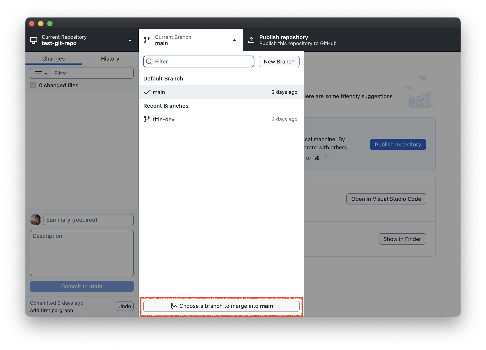
Select the
title-devbranch. The button at the bottom will turn to blue and say “Create a merge commit”. Click that to merge the branch: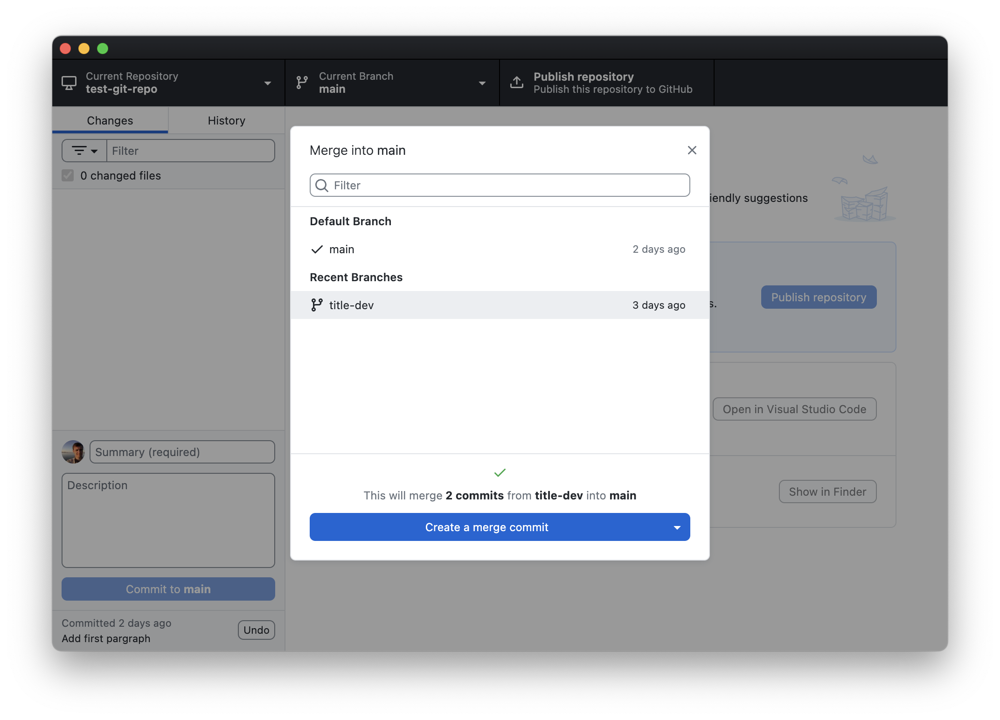
git merge title-devThis opens your text editor with the commit message
Merge branch 'title-dev'. Don’t change it, just save and exit to finish the merge:Merge made by the 'ort' strategy. title.txt | 5 +++++ 1 file changed, 5 insertions(+) create mode 100644 title.txtNotice how we have a summary of the changes that tells us that
title.txtgot five new lines.Congratulations! You’ve made your first merge on to main. To see what happened, let’s look at the history on the main branch:
Click on the History tab:
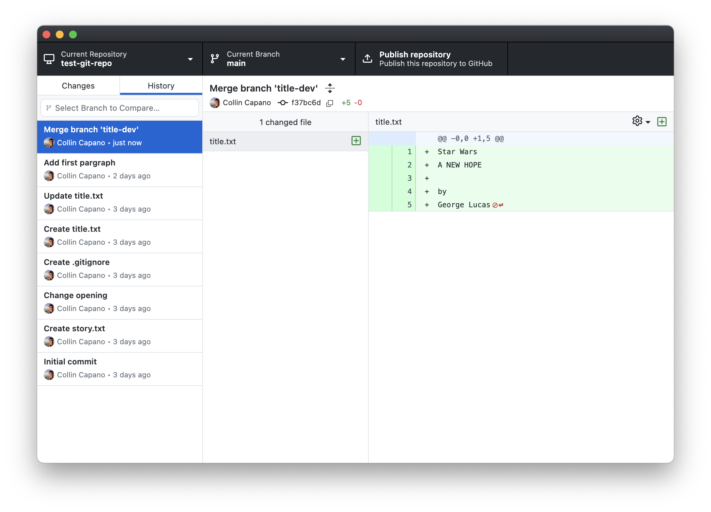
git log --oneline5a21f4b (HEAD -> main) Merge branch 'title-dev' 1b45d74 (title-dev) Update title.txt c1d82b6 (main-bkup) Add first paragraph 0517538 Create title.txt 40d5b63 Create .gitignore b81e803 Change opening 17b2095 Create story.txtThe commits you made on
title-devare now inmain, along with a final “Merge” commit at the end. This final “merge” commit is to indicate that some of the commits in the history came from another branch (and what the name of the branch was).title.txtis now in your directory when you’re onmain. If you switch betweenmainandtitle-dev,title.txtremains in both. Note that the history ontitle-devis unaffected by the merge: merging only changes the branch you merged into, not the branch you merged from.
%%{init: {"gitGraph": {"rotateCommitLabel": false, "mainBranchOrder": 1}}}%%
gitGraph
commit id: "Initial commit"
commit id: "Create story.txt"
commit id: "Change opening"
commit id: "Create .gitignore"
branch title-dev order: 2
commit id: "Create title.txt"
checkout main
commit id: "Add first paragraph"
checkout title-dev
commit id: "Update title.txt"
checkout main
branch main-bkup order: 0
checkout main
merge title-dev id: "Merge branch\n'title-dev'"
Squash and merge: the cleaner history
Instead of creating a merge commit, we could have done a squash and merge. Let’s see what would have happened by doing a squash and merge on to main-bkup.
Switch to the
main-bkupbranch.Click the “Current Branch” drop-down menu, and select
main-bkup.git checkout main-bkupSwitched to branch 'main-bkup'Squash and merge
title-devintomain-bkup:When we were preparing to merge
title-dev, you may have noticed there was a drop-down button next to the “Create a merge commit” button: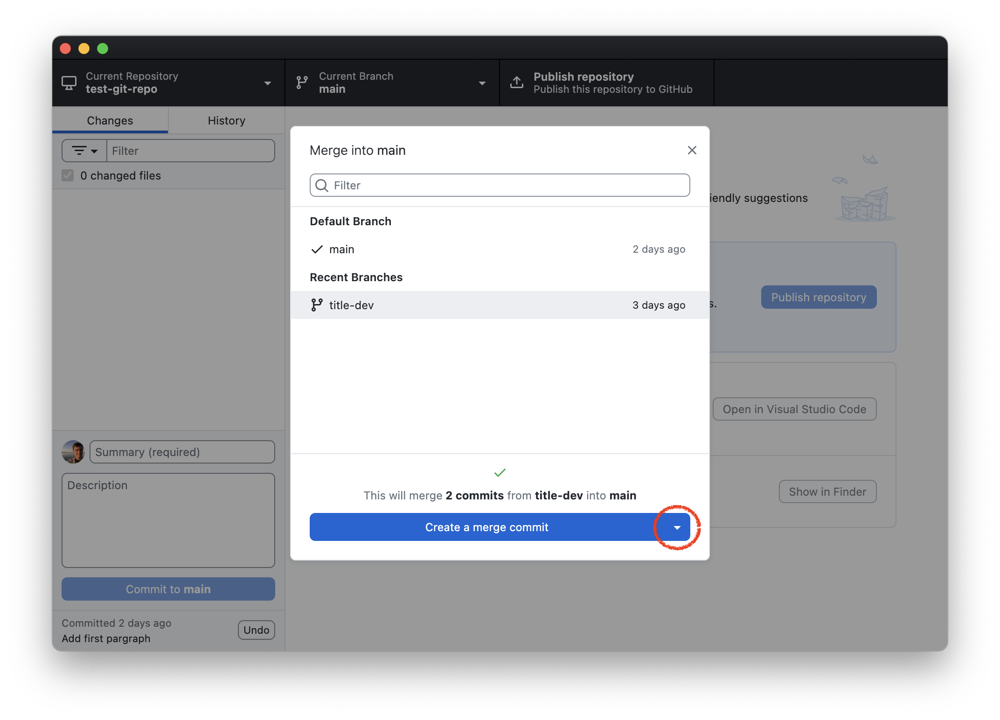
If you had clicked that, you are presented with three options – merge, squash and merge, and rebase:
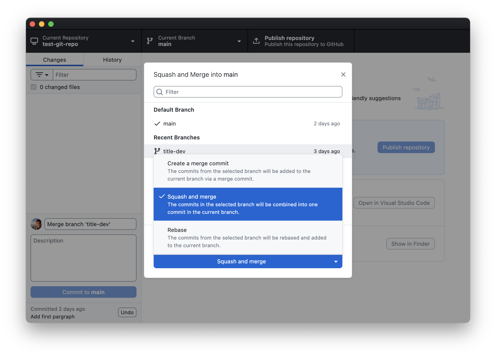
Click “Current branch” again, and select “Choose a branch to merge into main-bkup”. Select “title-dev”, then click the drop down arrow next to the “Create a merge commit button”.
Select “Squash and merge”. This will change the blue button to read “Squash and merge”. Click that to do the squash and merge.
git merge --squash title-devSquash commit -- not updating HEAD Automatic merge went well; stopped before committing as requestedUnlike a regular merge,
--squashstages the changes fromtitle-devbut doesn’t commit them. Commit them with:git commitThis opens your text editor with a message listing the squashed commits. Save and exit (no need to update the message):
[main-bkup 61857c0] Squashed commit of the following: 1 file changed, 5 insertions(+) create mode 100644 title.txtLook at the history on
main-bkup:Click the History tab:
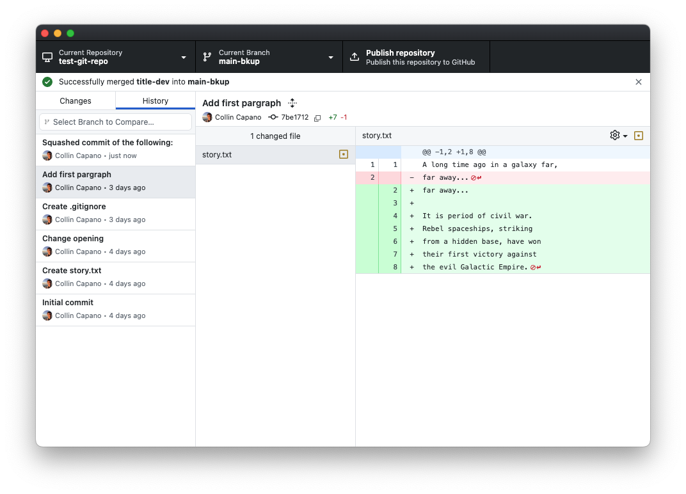
git log --oneline61857c0 Squashed commit of the following: c1d82b6 Add first paragraph 40d5b63 Create .gitignore b81e803 Change opening 17b2095 Create story.txt
The two commits that were done on title-dev, as well as the final merge commit, have all been “squashed” into a single large commit, which is placed at the end of the history on main-bkup. In graphical form, the history on main-bkup now looks like this:
%%{init: {"gitGraph": {"rotateCommitLabel": false, "mainBranchName": "main-bkup"}}}%%
gitGraph
commit id: "Initial commit"
commit id: "Create story.txt"
commit id: "Change opening"
commit id: "Create .gitignore"
commit id: "Add first paragraph"
commit id: "Squashed commit"
The contents of main-bkup are exactly the same as main, just the history is different. (You can verify this by switching between main and main-bkup.)
To merge, or to squash and merge?
This is one of the existing debates among Git users, and ultimately it is mostly a matter of preference regarding the commit history on the main branch:
- if we do not squash (as we did first), then all commits from our branch (potentially hundreds of commits) will also appear in the history of
main; - if we squash, all the commits from our branch will be condensed into a single commit, and only this commit will appear in the history of
main.
The former can make it easier to find when a bug was introduced because we still have all these small commits so it can be easier to see which one contains the bug. The downside is that the author must be careful that all commits in the merged branch have a good name and description, otherwise it can make the commit history very hard to parse.
This choice also depends on whether multiple people contributed to the branch. With the “merge only” approach, each person’s contribution is attributed in the history, and we can see who changed what with git blame. With the “squash and merge” approach, we can see from the commit message that multiple people contributed, but we cannot see who did what exactly (unless we go back to exploring the development branch, which can be tedious).
Personally, I use “squash and merge” most of the time to keep the history on main clean and straightforward (this is particularly nice on GitHub when using pull requests, as it will refer to the PR in the commit message; we will see this in exercise 3).
Updating a branch
Let’s go back to our earlier situation for a moment, before merging:
%%{init: {"gitGraph": {"rotateCommitLabel": false}}}%%
gitGraph
commit id: "Initial commit"
commit id: "Create story.txt"
commit id: "Change opening"
commit id: "Create .gitignore"
branch title-dev
commit id: "Create title.txt"
checkout main
commit id: "Add first paragraph"
checkout title-dev
commit id: "Update title.txt"
Note that when we decided to merge, our branch title-dev was out-of-sync with main since the commit Add first paragraph only exists on main. When we decided to merge title-dev into main, GitHub Desktop implicitly updated title-dev first:
[TODO: check whether this is actually the case]
%%{init: {"gitGraph": {"rotateCommitLabel": false}}}%%
gitGraph
commit id: "Initial commit"
commit id: "Create story.txt"
commit id: "Change opening"
commit id: "Create .gitignore"
branch title-dev
commit id: "Create title.txt"
checkout main
commit id: "Add first paragraph"
checkout title-dev
commit id: "Update title.txt"
merge main id: "Merge 'main'"
checkout main
merge title-dev id: "Merge branch\n'title-dev'"
In other words, it automatically updated our title-dev branch to the latest version of main, and did that using the “merging” approach.
Another way to do this is called rebasing. Rebasing is an operation where we change the base of our branch, so that the base no longer is the commit Create .gitignore but instead is Add first paragraph:
%%{init: {"gitGraph": {"rotateCommitLabel": false}}}%%
gitGraph
commit id: "Initial commit"
commit id: "Create story.txt"
commit id: "Change opening"
commit id: "Create .gitignore"
commit id: "Add first paragraph"
branch title-dev
commit id: "Create title.txt"
commit id: "Update title.txt"
checkout title-dev
After rebasing, it looks like we had originally created the branch from the commit Add first paragraph right from the start, and we can merge our branch into main once it is ready:
%%{init: {"gitGraph": {"rotateCommitLabel": false}}}%%
gitGraph
commit id: "Initial commit"
commit id: "Create story.txt"
commit id: "Change opening"
commit id: "Create .gitignore"
commit id: "Add first paragraph"
branch title-dev
commit id: "Create title.txt"
commit id: "Update title.txt"
checkout title-dev
checkout main
merge title-dev id: "Merge branch\n'title-dev'"
Should we choose merging or rebasing? This is another one of the few debates among git users, but generally it is not worth fighting about this. Both have pros and cons, starting with the ease of use. Merging is in general easier to manage when there are conflicts to resolve (see section 4 below), e.g. if the commit from main that we want to integrate in our branch modifies some files that our branch also modifies.
Deleting branches
Now that you’ve merged your title-dev branch and are back on the main branch, you can delete it to save space. You can also delete main-bkup now if you like.
To do that, click Current Branch, then right-click title-dev. This will yield a drop-down menu. Select “Delete branch”:
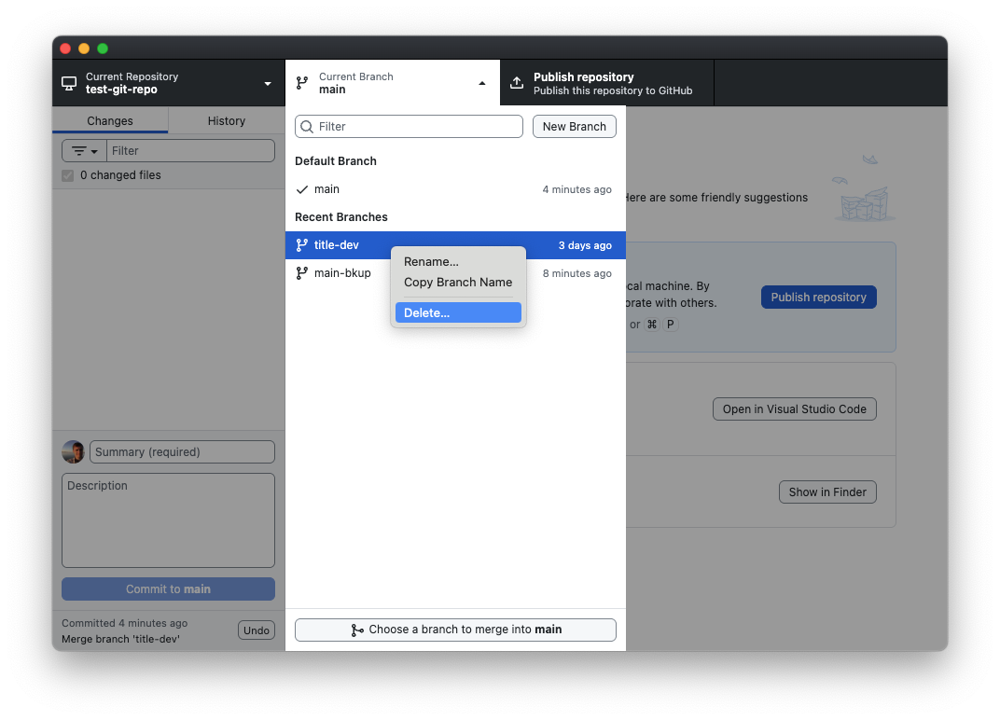
You will be prompted with a warning. Click the “Delete” button. The title-dev branch will be gone!
git checkout main
git branch -d title-dev
git branch -D main-bkupSwitched to branch 'main'
Deleted branch title-dev (was 1b45d74).
Deleted branch main-bkup (was 61857c0).-d refuses to delete a branch whose commits aren’t in the current branch, so that you don’t lose them. main-bkup contains the squashed commit, which isn’t on main, so it needs -D to force the deletion.
Challenge Questions: Editing the same file on different branches
In the above example we only made changes to different files on our two branches: on main we only edited story.txt, while on title-dev we only edited title.txt. However, there is nothing stopping us from editing the same file concurrently on two different branches. The following questions will illustrate how that works.
IV. Resolving merge conflicts
As illustrated in the Challenge Questions, if the same lines in the same file are modified on two different branches, git will not know how to merge the changes. This is called a merge conflict. In this case, git will ask you to reconcile the differences. To illustrate, let’s try merging dev2 into main after making the changes to list.txt discussed in Question 3 above:
If you have not done so, try to merge
dev2intomainafter making the changes to the second line oflist.txtdiscussed in Question 3:- Switch to
main: Click Current Branch -> main. - Click Current Branch -> Choose a branch to merge into “main”.
- Select dev2, then click “Create a merge commit” (note that a message pops up above the button that says there be 1 conflicted file).
git checkout main git merge dev2- Switch to
The merge fails, and Git tells you what files are conflicted (in this case
list.txt):You will get the Resolve conflicts box:
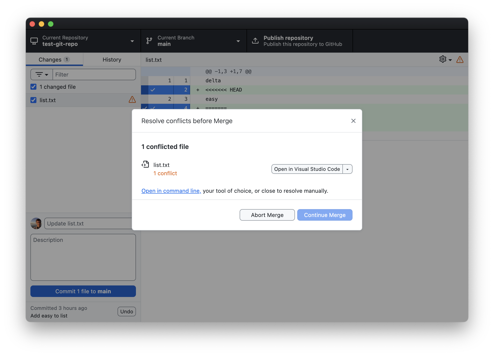
You will get:
Auto-merging list.txt CONFLICT (content): Merge conflict in list.txt Automatic merge failed; fix conflicts and then commit the result.git statusalso lists the conflicted files underUnmerged paths:On branch main You have unmerged paths. (fix conflicts and run "git commit") (use "git merge --abort" to abort the merge) Unmerged paths: (use "git add <file>..." to mark resolution) both modified: list.txt no changes added to commit (use "git add" and/or "git commit -a")To fix this, we need to manually resolve the conflict. There are several options to deal with this, such as using a code editor like VS Code. Here, though, we’ll use our simple text editor to resolve the issue.
Open list.txt with your text editor. You should see the following:
delta <<<<<<< HEAD easy ======= echo >>>>>>> dev2 foxtrotgithas added the conflicting lines from both branches to the file, along with information about the two branches. The line as it appears onmainis prefaced with<<<<<<< HEAD. This indicates that the following line(s) is (are) how it appears on the branch being merged into. The line(s) is (are) followed by a=======.After the
=======the line(s) as it/they appear(s) on the branch being merged are shown. These are followed by>>>>>>> BRANCH_NAME(here,BRANCH_NAMEisdev2).We are free to edit the file anyway we like to resolve the conflict. You should remove the
<<<<,====, and>>>>lines thatgithas added, along with the edit you want to make to resolve the conflict.In this case, let’s keep the edit as it appears on
dev2, and remove the edit onmain. Delete the appropriate lines so that the file looks like:delta echo foxtrotThen save and exit the file.
Complete the merge:
As soon as you save the changes to
list.txt, the merge conflict window in GitHub Desktop will change to show that all conflicts have been resolved: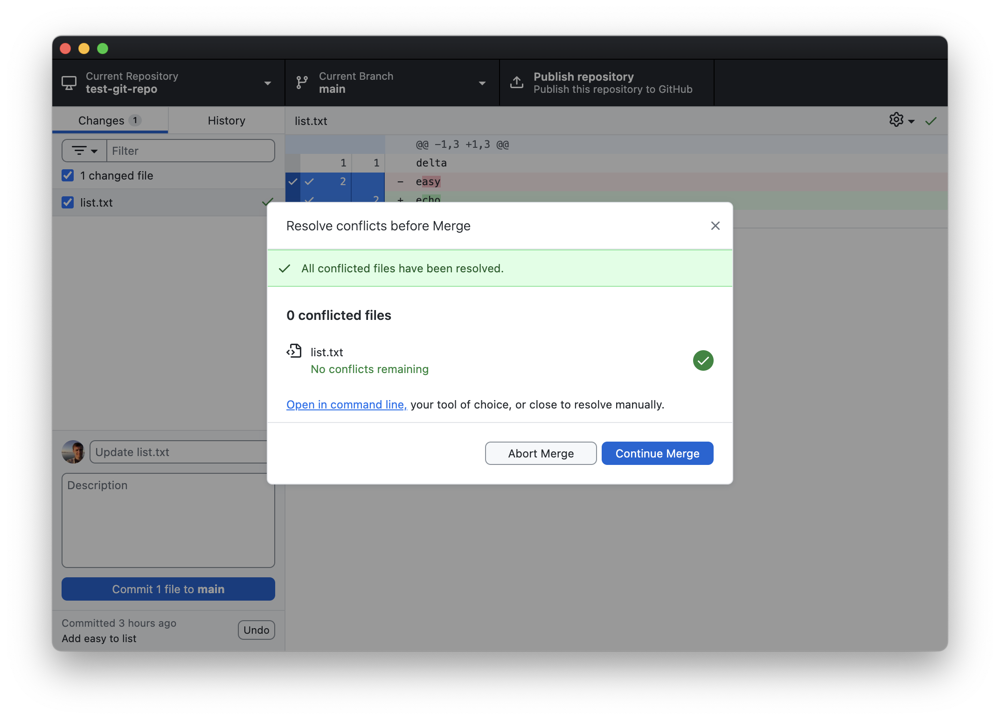
Click “Continue Merge”.
Stage the file and commit without the
-m:git add list.txt git commitThis opens your text editor with the commit message set to
Merge branch 'dev2'. Save and exit:[main 1c5dcc2] Merge branch 'dev2'The merge conflict is resolved! If you look at the history, you will see all the commits in it, as if you had merged without any issue.
Merge conflicts happen, but can be fixed fairly easy. If there were multiple areas in a file that caused a conflict, the conflicting areas would all be surrounded by the same <<<<<<</=======/>>>>>>> lines that we saw above. You’ll want to search through the file for those to make sure you got all the conflicts. If multiple files had conflicts, git will make you resolve all of them before allowing the merge to complete.
Summary
In this exercise, we learnt three key concepts to use Git (repositories, commits, and branches), and we saw how to use GitHub Desktop or the command line to initialise a Git repository and explore various Git commands.
In the next exercise, we will see how to store a Git repository online and how to interact with it. Finally, in the third exercise, we will see how to collaborate on other people’s repositories.
Session info
─ Session info ───────────────────────────────────────────────────────────────
setting value
version R version 4.6.2 (2026-10-29)
os Ubuntu 26.04.1 LTS
system x86_64, linux-gnu
ui X11
language (EN)
collate C.UTF-8
ctype C.UTF-8
tz UTC
date 2026-11-20
pandoc 3.7.0.2 @ /usr/bin/pandoc
quarto 1.11.9 @ /usr/local/bin/quarto
──────────────────────────────────────────────────────────────────────────────